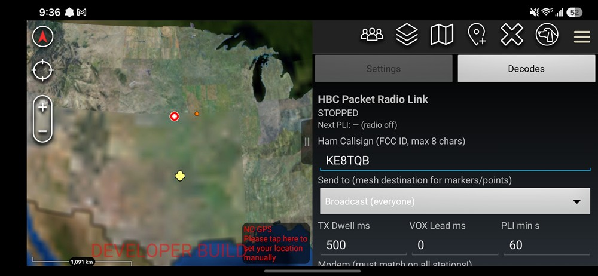
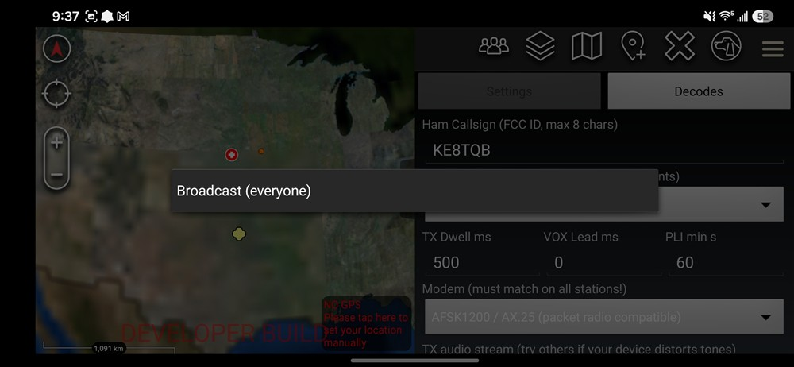
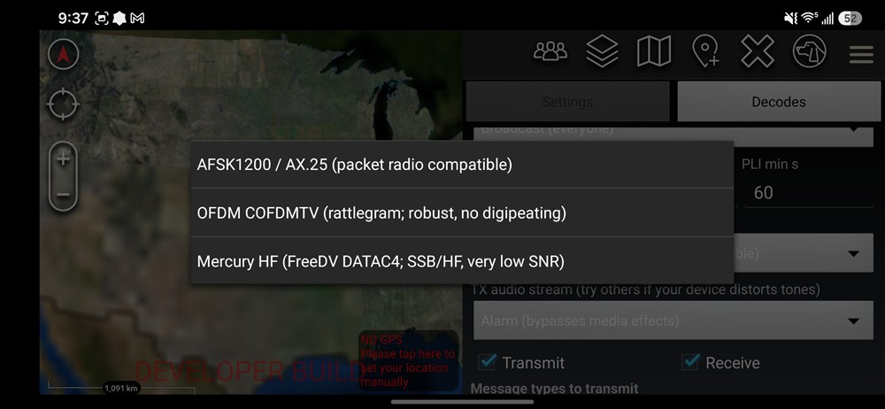
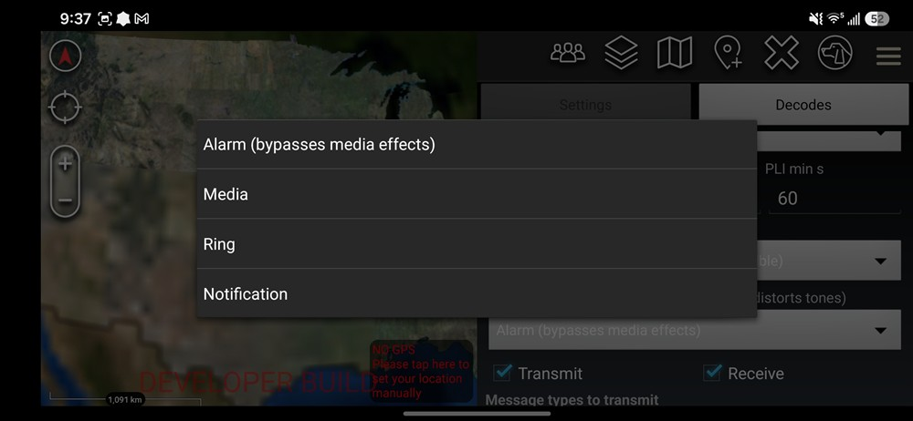
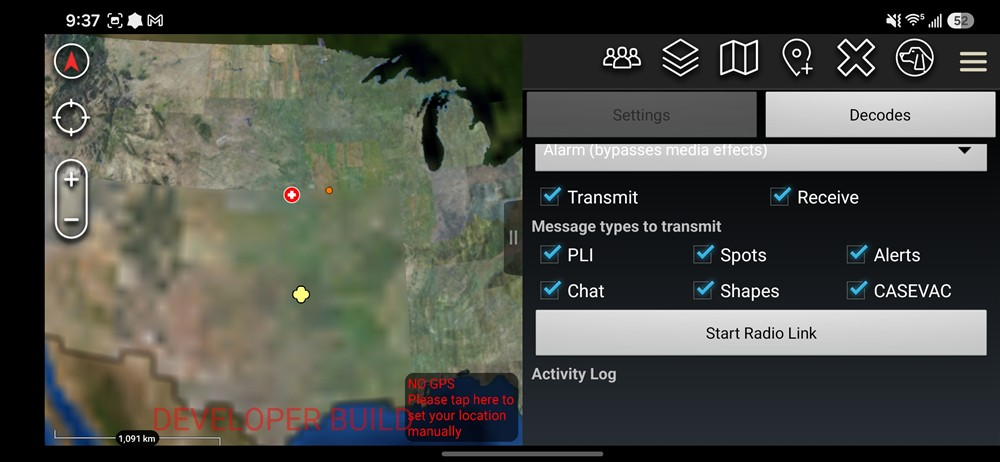
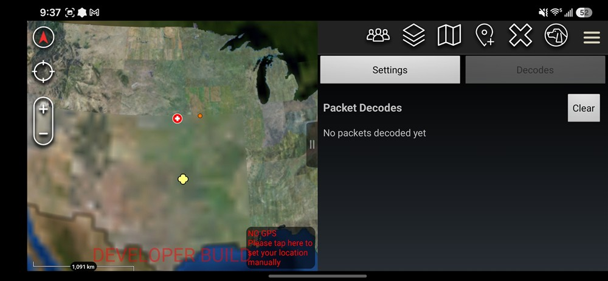

Appendix A — GitHub Repository File Structure
HBC Radio is a plugin (an add-on) for ATAK, the Android Team Awareness Kit mapping app. It lets ATAK devices share map information — positions, markers, chat messages, and alerts — using ordinary handheld ham radios instead of the internet or a cell network. The phone plays specially coded sound into the radio; another phone hears that sound on its radio and turns it back into map data.
The system is built in three layers, like a stack of responsibilities. Each layer is specified in its own section of this document:
The path one message takes from your screen to the other station’s screen:
ATAK map event → HBC encoder (shrinks it to bytes) → MeshRouter (adds addressing) → modem (turns bytes into audio) → radio → ...air... → radio → modem → MeshRouter → HBC decoder → ATAK map
On receive, the mesh layer decides what to do with each frame: deliver it to this device, forward it toward its destination, rebroadcast it (announces), or ignore it.
| Layer | Code that implements it | How things are addressed |
|---|---|---|
| Application | HbcEncoder / HbcDecoder | Callsign inside the HBC header; predictable UIDs (section 5.3) |
| Network | MeshRouter | Origin / Transmitter / Destination / Next-hop callsigns |
| Physical | AudioModem, OfdmModem, MercuryModem | None — just a byte pipe (AFSK adds a fixed AX.25 wrapper for station ID) |
A modem converts bytes into sound and sound back into bytes. HBC Radio offers three, each suited to different radios and conditions. All three carry the exact same mesh frame, but they are not compatible with each other — every station on a channel must select the same modem (Figure 3).
| Parameter | AFSK1200 | OFDM COFDMTV | Mercury HF |
|---|---|---|---|
| Waveform | Bell 202 AFSK, 1200 baud | QPSK OFDM (rattlegram “short”), 1600 Hz BW | FreeDV DATAC4 raw-data OFDM (codec2) |
| Sample rate | 48000 Hz | 48000 Hz | 8000 Hz |
| Payload capacity per burst | Practical AX.25 limits (>200 B) | 169 B | 52 B (54 B frame minus framing) |
| Error protection | HDLC CRC-16 (detect only) | Polar code + CRC-32 | LDPC + CRC-16 |
| Best for | VHF/UHF FM; compatible with classic packet radio | VHF/UHF FM; survives phone audio processing | HF SSB; works at very weak signal levels |
The classic 1980s packet-radio sound (two alternating tones, 1200 bits per second). Mesh
frames ride inside a single AX.25 “UI” frame. The AX.25 addresses are only
wrapping paper — they are not used for routing: destination is always
HBC, source is the operator’s ham callsign (which doubles as the legal
station ID), and no digipeater path is used. Each transmission is rendered in advance as:
lead-in silence (150 ms) → optional VOX leader tone → HDLC flag preamble
(“TX Dwell,” default 500 ms) → the frame → tail silence (250 ms).
A modern, robust waveform that packs data onto many small carriers at once. Framing inside the 170-byte block: byte 0 = mesh frame length (1–169), bytes 1..n = the mesh frame, zero-padded. The operator callsign also rides in the waveform’s own metadata header. Audio carrier is 1500 Hz; the VOX leader is made of noise symbols (~180 ms each).
Designed for long-range HF radio, where signals are weak and distorted. The burst layout
matches the Mercury HF modem exactly: preamble → one DATAC4 data frame with a CRC-16
checksum in its last two bytes → postamble, with 100 ms of silence on each end. Framing
inside the 54 usable bytes: byte 0 = length, byte 1 = the letter 'H' (a marker
that says “this is HBC traffic”), bytes 2..n = the mesh frame, zero-padded.
Only one station can talk on a radio channel at a time; two at once garble both (a “collision”). Before transmitting, every modem listens first: incoming audio energy is compared against an automatically learned background-noise level, and the channel counts as busy when audio is 4× louder than that background (held for 400 ms past the last loud moment so brief gaps inside someone’s transmission don’t look like free air). When the channel goes quiet, the station still waits a random 150–550 ms — so two stations that were both waiting don’t key up at the same instant. After 8 seconds of continuous busy (15 s on Mercury) the frame is sent anyway so traffic can never be blocked forever. AFSK also uses its demodulator’s data-carrier-detect as a second “someone is talking” signal.
Implements “Adaptation of Uncoordinated Distance-Vector Routing for Unencrypted Amateur Radio Networks” (see References), with one approved deviation: packet payloads carry compact HBC binary rather than ITA2 text.
Every mesh packet starts with the same 13 bytes:
| Byte offset | Length | Field | Description |
|---|---|---|---|
| 0 | 1 | Packet Type | 0x01 Announce, 0x02 Broadcast, 0x03 Direct, 0x04 ACK |
| 1 | 5 | Origin Callsign | Who originally created the packet (bit-packed ITA2, section 4.2) |
| 6 | 5 | Transmitter Callsign | Who is transmitting this particular hop; each relay overwrites it with its own callsign |
| 11 | 2 | Sequence ID | A 16-bit counter value (big-endian) used to recognize duplicates (section 4.8) |
Callsigns are stored in an old teletype alphabet called ITA2, which uses only 5 bits per
character instead of 8 — so 8 characters fit in exactly 5 bytes (40 bits). Two special
“shift” codes switch between letters (LTRS = 11111) and figures/digits
(FIGS = 11011); unused positions are filled with NULL (00000).
A leading LTRS is written before the first letter; if a callsign would need 9 codes (for
example KE8TQB), the leading LTRS is dropped — decoders start in letters
mode anyway, so both forms read back identically.
| Example | Code sequence | Packed bytes (hex) |
|---|---|---|
| K1ABC | LTRS K FIGS 1 LTRS A B C | FF B7 DF E2 6E |
| N3DEF | LTRS N FIGS 3 LTRS D E F | F9 B7 0F CA 16 |
| W2XYZ | LTRS W FIGS 2 LTRS X Y Z | FE 77 9F DE B1 |
BF, but the paper’s own bit-by-bit math works out to DF; this
implementation follows the math. All three vectors above are locked in by the automated test
suite (codec-test/MeshRouterTest.java).A tiny “I exist and here’s how far away I am” packet that builds everyone’s address book.
| Byte offset | Length | Field | Description |
|---|---|---|---|
| 0–12 | 13 | Common Header | Type = 0x01 |
| 13 | 1 | Hop Count | How many relays the announce has passed through; the origin sets 0, each relay adds 1 |
A message to everyone in earshot. Not relayed, not acknowledged.
| Byte offset | Length | Field | Description |
|---|---|---|---|
| 0–12 | 13 | Common Header | Type = 0x02 |
| 13+ | variable | Payload | One HBC message (section 5) |
A message for one specific station, passed hop-by-hop.
| Byte offset | Length | Field | Description |
|---|---|---|---|
| 0–12 | 13 | Common Header | Type = 0x03 |
| 13 | 5 | Destination Callsign | The final recipient |
| 18 | 5 | Next Hop Callsign | The neighbor being asked to carry this hop; each relay rewrites it |
| 23+ | variable | Payload | One HBC message |
A station that sees its own callsign in Next Hop looks the Destination up in its address book, writes in the next station’s callsign, and re-transmits. The final destination delivers the payload and answers with an ACK (section 4.6). If nobody knows a route, a relay drops the packet; the original sender instead falls back to sending it as a Broadcast.
The “got it!” receipt for a Direct message, sent back to the original sender.
| Byte offset | Length | Field | Description |
|---|---|---|---|
| 0–12 | 13 | Common Header | Type = 0x04. Origin = the station acknowledging. |
| 13 | 5 | Destination Callsign | The Origin of the Direct being acknowledged |
| 18 | 2 | Acked Sequence ID | The Sequence ID of the Direct being confirmed |
Stations along the way forward ACKs toward their destination when they know a route; the duplicate cache (section 4.8) keeps that from snowballing.
Without protection, a rebroadcast message could bounce between stations forever. Each
receiver therefore remembers [Origin + Sequence ID + Type] combinations for
5 minutes; a packet it has already seen is silently ignored. One deliberate exception: a
duplicate Direct addressed to this station gets a fresh ACK (but is not delivered
twice) — that covers the case where the first ACK was lost on the air.
Directs work “fire and wait”: after sending, the originator waits 5 s (plus a random 0–2 s) for the ACK. No ACK → send it again with the same Sequence ID, up to 3 retries, then declare it failed and log it. Broadcasts are never acknowledged or retried.
The payload inside every Broadcast/Direct is one HBC message: a map event squeezed into as few bytes as possible by packing values bit-by-bit instead of sending bulky XML text. (For scale: a normal ATAK position report is roughly 1–2 thousand bytes of XML; the HBC version is about 15 bytes.) Full field-level definitions and worked byte examples live in the HBC-Protocol repository (see References); this section summarizes the interface.
| Field | Size | Description |
|---|---|---|
| Callsign | variable (ITA2, CR-terminated) | Sending operator/device callsign, max 8 characters |
| Version | 3 bits | 000 = version 1 |
| Mode | 3 bits | mode−1 for Modes 1–6; 111 = Mode 0 Ack |
| Mode | CoT type(s) | What it carries | Typical size |
|---|---|---|---|
| 0 Ack | b-t-f-d / b-t-f-r | Chat delivered/read receipt: recipient callsign, kind (2 bits), 16-bit tag | ~12 B |
| 1 PLI / Spot | a-f-G, a-h-G, a-n-G, a-u-G | Position report: spot flag, affiliation (2 bits), name (7 chars), latitude/longitude (21+22 bits) | ~15 B |
| 2 Alert | b-a-o-tbl / b-a-o-can | 911 emergency: active flag, alert + originator names, position | ~18 B |
| 3 GeoChat | b-t-f | Text message: destination kind (All / Room / DM), room or recipient, DM 16-bit tag, ITA2 text | DM “helo landing zone” = 23 B |
| 4 Shape | u-d-c-c / u-d-r / u-d-f | Drawing: circle (center + radius) or polygon/polyline (≤15 points) | varies |
| 5 CASEVAC | b-r-f-h-c | Medical evacuation request (9-line summary fields) | ~20 B |
| 6 Extended Marker | any placed marker | Full CoT type token, icon reference (2525C / spot-map / custom), color tint | varies |
ATAK identifies every map object by a UID (unique ID string). HBC does not transmit UIDs — both ends compute the same one from the callsign, so a station’s position marker updates in place instead of piling up duplicates:
| Object | UID rule |
|---|---|
| Position (PLI) marker | HBC-{CALLSIGN} |
| 911 alert | HBC-{CALLSIGN}-911 |
| DM conversation | Recipient’s UID; the receiving plugin swaps in its real ATAK device UID so the message lands in the right chat window |
| Spots / shapes / markers | Random UUID each time one is received |
Every chat DM carries a 16-bit tag — a CRC-16/CCITT-FALSE checksum (polynomial
0x1021, initial value 0xFFFF) of ATAK’s internal messageId. When the
recipient’s ATAK automatically generates its delivered/read receipts, the plugin
converts them into tiny Mode 0 Acks that echo the tag back over the air; the sender matches
the tag to the original messageId and injects the receipt, so ATAK’s familiar
delivered/read checkmarks work end-to-end over radio. These application-level receipts are
separate from (and in addition to) the mesh-layer ACKs of section 4.6.
ATAK only lists a station in its chat/contact pickers when that station’s position
report includes a network “endpoint.” Received PLIs are therefore reconstructed
with <contact callsign="..." endpoint="*:-1:stcp"/> and a
<__group> team entry, so hearing a single position report makes the
station selectable for chat and file/point sends. Outgoing traffic to that contact is
intercepted by the plugin and transmitted over the mesh.
All configuration lives in one pane, opened from the HBC toolbar icon. The figures below show each control described in this document.






| Parameter | Value | Layer |
|---|---|---|
| Route entry TTL | 30 min (refreshed by any heard frame) | Mesh |
| Duplicate cache TTL | 5 min | Mesh |
| Cleanup interval | 60 s | Mesh |
| Direct retry timer | 5 s + 0–2 s jitter, max 3 retries | Mesh |
| Quiet-time announce keepalive | 10 min without own traffic | Mesh |
| CSMA busy threshold / hold | 4× adaptive noise floor / 400 ms | PHY |
| CSMA backoff / give-up | 150–550 ms clear / 8 s (15 s Mercury) | PHY |
| PLI rate limit | User setting, default 60 s (Figure 1) | Application |
| RX duplicate window (frame hash) | 30 s | Plugin |
| Term | Meaning |
|---|---|
| ATAK | Android Team Awareness Kit — the mapping app this plugin extends |
| CoT | Cursor on Target — the XML message format ATAK uses for map events |
| EUD | End User Device — the phone/tablet running ATAK |
| PLI | Position Location Information — a “here I am” report |
| Modem | Modulator/demodulator — converts bytes to sound and back |
| Frame / packet | One complete chunk of bytes sent over the air |
| Payload | The useful data inside a packet, after the addressing header |
| Hop | One radio link in a relay chain (A→B is one hop; A→B→C is two) |
| Route / next hop | Address-book entry: which neighbor to hand a message to so it reaches a destination |
| ACK | Acknowledgment — a short “received OK” reply |
| CSMA | Carrier Sense Multiple Access — listen before transmitting to avoid collisions |
| VOX | Voice-operated transmit — the radio keys up automatically when it hears audio |
| CRC | Cyclic Redundancy Check — a checksum that detects corrupted data |
| ITA2 | A 5-bit teletype alphabet from the telegraph era; smaller than normal 8-bit text |
| TTL | Time To Live — how long a record is kept before being erased |
| UID | Unique identifier string for a map object in ATAK |
The plugin source lives at github.com/ke8tqb/HBC-ATAK-Plugin. The map below shows where everything described in this document is implemented.
MeshRouter.java; the message encodings of Section 5 are in
HbcEncoder.java/HbcDecoder.java; anything you can tap in the app is
in HbcPlugin.java plus res/layout/main_layout.xml. The
codec-test/ programs run on an ordinary computer (no phone needed) and prove the
byte formats match this document.